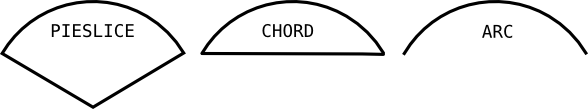

Tkinter 8.5 reference: a GUI for Python |
Tkinter 8.5 reference: a GUI for Python |
An arc object on a canvas, in its
most general form, is a wedge-shaped slice taken out of
an ellipse. This includes whole ellipses and circles as
special cases. See Section 8.11, “Canvas oval objects”
for more on the geometry of the ellipse drawn.
To create an arc object on a canvas C
id= C.create_arc(x0,y0,x1,y1,option, ...)
The constructor returns the object ID of the new arc
object on canvas C
Point (x0y0x1y1
The various options include:
Table 7. Canvas arc options
activedash
|
These options apply when the arc is in the tk.ACTIVE state, that is, when the mouse is
over the arc. For example, the activefill option specifies the interior
color when the arc is active. For option values,
see dash, fill,
outline, outlinestipple, stipple,
and width, respectively.
|
activefill
| |
activeoutline
| |
activeoutlinestipple
| |
activestipple
| |
activewidth
| |
dash
| Dash pattern for the outline. See Section 5.13, “Dash patterns”. |
dashoffset
| Dash pattern offset for the outline. See Section 5.13, “Dash patterns”. |
disableddash
|
These options apply when the arc's state is tk.DISABLED.
|
disabledfill
| |
disabledoutline
| |
disabledoutlinestipple
| |
disabledstipple
| |
disabledwidth
| |
extent |
Width of the slice in degrees. The slice starts
at the angle given by the |
fill |
By default, the interior of an arc is
transparent, and fill='' will
select this behavior. You can also set this
option to any color
and the interior of the arc will be filled with
that color.
|
offset
| Stipple pattern offset for the interior of the arc. See Section 5.14, “Matching stipple patterns”. |
outline | The color of the border around the outside of the slice. Default is black. |
outlineoffset
| Stipple pattern offset for the outline. See Section 5.14, “Matching stipple patterns”. |
outlinestipple |
If the outline option is used,
this option specifies a bitmap used to stipple
the border. Default is black, and that default
can be specified by setting outlinestipple=''.
|
start | Starting angle for the slice, in degrees, measured from +x direction. If omitted, you get the entire ellipse. |
state
|
This option is tk.NORMAL by default.
It may be set to tk.HIDDEN to make
the arc invisible or to tk.DISABLED
to gray out the arc and make it unresponsive to
events.
|
stipple
|
A bitmap indicating how the interior fill of the
arc will be stippled. Default is stipple='' (solid). You'll probably
want something like stipple='gray25'. Has no effect unless |
style
|
The default is to draw the whole arc; use style=tk.PIESLICE for this style. To draw
only the circular arc at the edge of the slice,
use style=tk.ARC. To draw the
circular arc and the chord (a straight line
connecting the endpoints of the arc), use style=tk.CHORD.
 |
tags
|
If a single string, the arc is tagged with that
string. Use a tuple of strings to tag the arc
with multiple tags. See Section 8.4, “Canvas tags”.
|
width | Width of the border around the outside of the arc. Default is 1 pixel. |